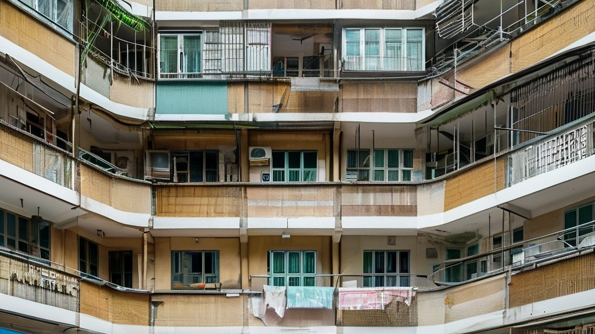
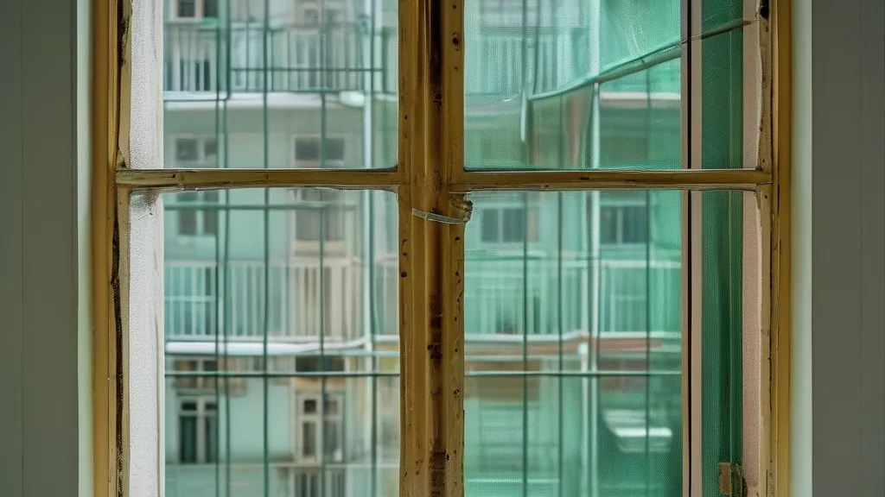
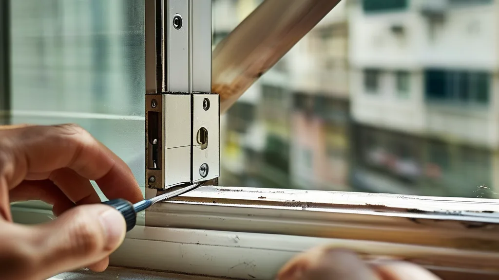
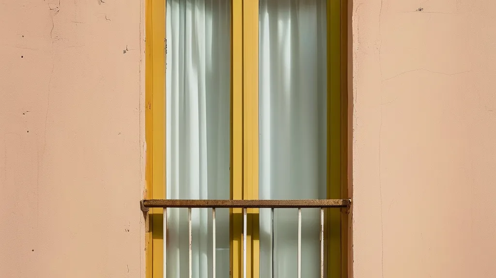
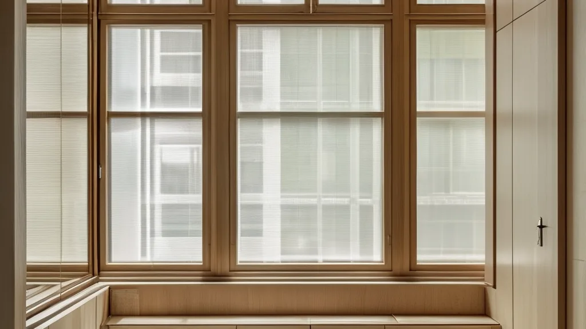

牛池灣380呎大維修棚架爆竊：窗鎖要換嘅三個位

📍 場景：牛池灣一個四十幾年樓齡私人屋苑，380 呎兩房，12 樓｜受訪：陸太（業主）｜同行：雲蕾、祥叔（觀塘木行三十幾年）｜記錄：張丹楓｜日期：2026 年 11 月 28 日｜WhatsApp 報價：852 5190 2328
序幕：兩晚兩宗，一棟樓嘅棚架
11 月 26 日晚上 8 時 10 分，一單突發新聞見報：牛池灣一個四十幾年樓齡嘅私人屋苑，兩日之內有兩個單位被撬窗爆竊。第一宗發生喺 11 月 25 日晚上近 11 時，一個單位嘅女住戶返到屋企，見窗被撬、房入面被翻過，損失約 8 萬元金器。第二宗喺 11 月 26 日早上 9 時幾，同一座另一個單位，戶主正在外遊，外傭上門餵貓，見到睡房窗被撬，約 24 萬元金器同珠寶唔見。兩戶加起約 32 萬元，警方列作連環爆竊處理。
新聞有一句我睇完停低咗：該屋苑當時正做外牆大維修，外牆由地下搭到頂，全部係棚架。
11 月 27 日下午三點，我同雲蕾去到牛池灣。陸太喺樓下等我哋，未有寒暄就指住外牆：「你睇下，竹枝就係貼住我個窗。」
第一幕：十二樓，棚架離窗台三百五十毫米
380 呎兩房，12 樓，大維修做到第 4 個月。走廊牆身貼住承辦商通告，日期寫住 11 月 20 日。入到單位，客廳右邊嗰隻窗最搶眼：窗外面係一層竹棚，竹枝之間有紮口，橫向竹離窗台大約 350 毫米，人企喺棚上，手一伸就摸到窗框。
祥叔跟住上樓。佢喺觀塘木行做咗三十幾年，舊樓嘅木窗、鐵窗花、鋁窗，邊個年代用邊種料，佢一眼睇得出。佢先用手推窗扇，再摸窗鉸，最後蹲低睇窗框底。
「我住十二樓喎，賊點爬上嚟？以前樓下都無事。」
「以前無棚。棚架一搭，十二樓就等於地下。你睇，每 1.3 米一個紮口，竹枝一級一級，後生仔一分鐘上到呢層。」
祥叔講嘅唔係嚇人。棚架係臨時結構，按工程需要搭，棚網、斜撐、出入位都係為師傅開工方便。工程做完拆走，但工程做幾個月，呢幾個月單位嘅窗就等於向住一條公共樓梯。
「我問過管理處，佢話棚架係承辦商嘅，有事叫我報警。咁我交管理費做乜？」
「你唔係要佢認錯，你係要佢簽一份紙。今晚開始，每次發現窗邊有異樣就影相、寫時間，交一份副本去管理處，要求書面回覆。有紙同無紙，之後嘅處理完全唔同。」

第二幕：三個位先要換鎖，其他可以等
陸太想要一個今晚就做得到嘅答案。祥叔講得直接：爆竊睇三樣嘢——窗鎖有幾多個鎖點、窗框同窗扇之間嘅罅隙、以及邊隻窗最貼棚架。佢喺單位行一圈，指出三個位。
第一位，睡房嗰隻鋁窗。舊式單點鎖，一個把手、一個鎖扣，鎖住之後窗扇仍然可以用手推開 5 毫米以上。祥叔話，單點鎖嘅問題唔係鎖唔實，係力集中在一點，撬棍一撬就變形。呢隻窗要換多點鎖，上下加兩個鎖點，一共 3 點；窗鉸同時要換，因為銹咗嘅鉸一受力就會拉開罅。
第二位，客廳貼棚架嗰隻窗。呢隻窗最大，離棚架最近。做法係加一條直徑 15 毫米嘅不銹鋼窗鎖桿，橫跨窗扇同窗框，夜晚扣上。想再做多一步，可以裝窗磁感應器，一隻大約二百幾元，開窗即響，唔涉及改動外牆。
第三位，露台門。舊樓露台門多數係推拉門，鎖舌短，一條鐵片就可以推開。祥叔建議加一支防撬橫桿，固定在門框內側，長度要量到門扇實際闊度，唔好靠估計。
「換鎖要唔要問過管理處？大維修做緊，我改動會唔會俾人話我阻住工程？」
「窗鎖、窗花、門鎖都係單位內部裝置，唔關外牆事。你唔好喺棚上面做任何嘢，亦唔好自己拆窗花，其餘嘅今晚就換得。」
「咁我用膠紙封住個窗柄，貼張紙寫有閉路電視，得唔得？」
「膠紙係提醒自己，唔係防賊。真係要貼，就貼喺棚架出入位嘅當眼處，同時真係裝一隻，唔好寫你屋企無嘅嘢。」
還有一件事要同承辦商傾：棚架夜間有無照明、收工後棚架出入口有無上鎖、巡樓紀錄邊個簽。呢三條寫成一個電郵或者書面要求，管理處同承辦商都要回覆。唔係投訴，係留紀錄。
第三幕：大維修未拆棚，室內裝修點排次序
陸太原本打算大維修一完就全屋翻新：換地板、做廳房櫃、油牆。我同佢講，拆棚之前唔好落木作單，因為外牆工程未完，滲水同灰塵都未定。
可以即時做嘅有三樣。第一，窗邊臨時保護：用 1 毫米厚嘅膠膜封窗框，邊位貼 50 毫米寬嘅膠紙，唔好用牛皮膠紙直接貼喺鋁框，會留膠。第二，貴重物品同證件唔好放近窗，尤其係貼棚架嗰間房。第三，櫃嘅設計先改圖：櫃身離地 100 毫米、櫃桶加鎖、貼窗位置留 50 毫米散熱同檢修位。呢三樣唔使等拆棚，改圖紙就做得到。
「櫃桶加鎖，係咪即係唔信自己工人？我請嘅師傅都做咗十幾年。」
「唔關信唔信。大維修期間，單位一日有幾班人出入：棚工、泥水、管工、管理處職員。櫃桶有鎖，係令你唔需要記住邊個入過嚟，亦令入嚟嘅人知道呢個位有人管。」
價錢我照寫低，唔怕你比較：
項目一：全屋窗鎖更換及窗鉸調整（8 隻窗） $9,800
項目二：露台門防撬橫桿及輔助鎖 $3,600
項目三：廳房訂造櫃加櫃桶鎖及離地活動腳（3 組） $15,400
項目四：窗邊臨時保護及完工清潔 $3,200
項目五：五金配件及安裝雜項 $3,900
合計（故事報價） $35,900
以上係故事報價，實際以度尺為準。同樣一個 380 呎單位，窗嘅數量、窗鉸銹蝕程度、要唔要加窗花，價錢就會唔同。

尾聲：一張交更表，一個鎖匠電話
離開之前，祥叔喺廚房窗台留低一句：「你哋裝修做完，記得叫我睇一次窗鉸。棚拆咗之後，窗鉸受力會變，好多時半年後先發現關唔埋。」
陸太當日做咗三件事：把兩張有時間嘅相片交去管理處，書面要求交代棚架夜間照明同巡樓安排；約鎖匠換睡房同客廳兩隻窗嘅鎖；把櫃嘅圖紙改為離地加櫃桶鎖，等拆棚之後才落單。
我哋只做咗臨時保護同窗鎖，木作全部留白。陸太初頭嫌窗口封住難睇，第二日朝早見到棚架上面有腳印，就冇再出聲。
大維修本來係好事，樓舊了要修，棚架係必要之惡。問題係，棚架一搭，單位嘅窗就由對街變成對走廊，而呢件事，合約、通告、會議紀錄通常都唔會提。之前寫過紅磡何太做法團委員點睇大維修、深水埗鄧生收驗樓令嘅經歷，同埋頂層天花滲水要先查源頭，講嘅都係同一件事：工程係人做嘅，業主要有一份自己手上嘅紙。

最後一句係祥叔講嘅，我照抄：棚架擋唔到，但你唔好連窗都唔鎖。

❓ 大維修棚架三問
Q1：大維修搭棚期間，單位被撬窗爆竊，責任屬邊個？
要分三層睇：單位內部裝置屬業主責任；公用部分同棚架屬法團與承辦商嘅工程範圍；實際刑責由警方調查。業主可以做嘅，係即時報警、保留現場、把相片同時間紀錄書面交管理處同法團，並要求承辦商交代棚架夜間照明、出入位管理同巡樓紀錄。呢啲紀錄日後無論係追討、保險申報抑或法團會議，都用得着。
Q2：棚架貼住窗，我可唔可以自己換鎖或者加窗花？
窗鎖、窗花、門鎖屬單位內部裝置，一般唔需要事先批准；但唔好喺棚架上做任何工作，亦唔好自行拆改外牆或窗框結構。換鎖時保留舊鎖同單據，日後有爭議時可以證明改動範圍。若單位屬租置或資助出售房屋，改動窗花前應先向管理處查詢所屬類別。
Q3：大維修未完，室內裝修應該幾時開始做？
木作同油漆建議等拆棚之後。拆棚前可以先做三樣：窗邊臨時保護、窗鎖同窗鉸更換、櫃嘅圖紙修改（離地 100 毫米、櫃桶加鎖、貼窗留 50 毫米）。呢三樣唔受外牆工程影響，亦唔會白做。地板同牆身就等外牆收口完成、試過落雨冇滲水，才落單。
本文配圖均為 AI 場景示意圖，僅供場景參考，並非真實工地照片或業主影像。
你幢樓都搭緊棚？先影窗，再問價。
📱 一鍵 WhatsApp 張丹楓